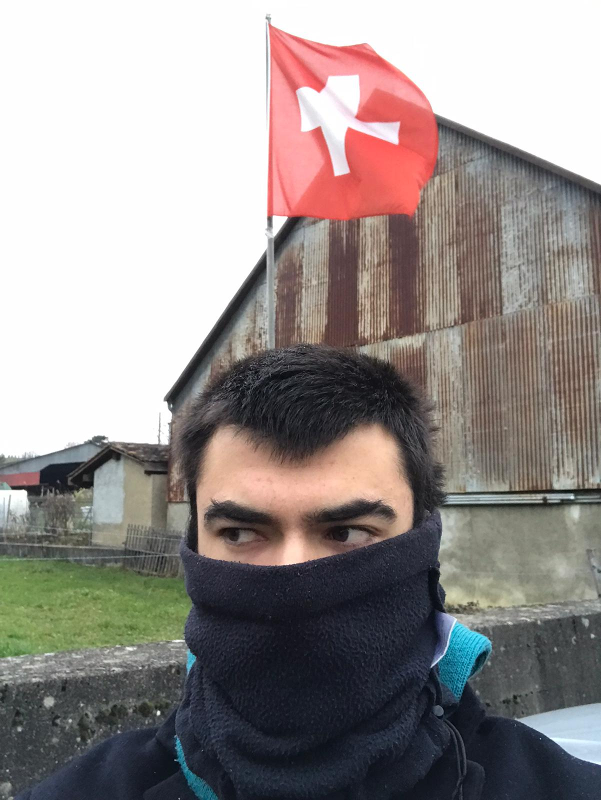

Mi Historia
Un viaje a través de la comunicación internacional y el aprendizaje multicultural
2023
Marché Cuendet, Suiza
Experiencia internacional en Bremblens, Cantón de Vaud. Trabajo en una granja de producción sin químicos, mejorando mis habilidades en francés y alemán.

2022
Erasmus en Brno
Universidad Mendel de Brno, República Checa. Una experiencia transformadora que expandió mis horizontes culturales y académicos.
2020-2024
Grado en Geografía
Facultad de Letras, UPV/EHU. Desarrollo de una sólida base académica y pasión por el análisis territorial.
2024
Certificación DELF B2
Obtención del certificado DELF B2 en francés con una puntuación de 87.5/100, demostrando un alto nivel de competencia en el idioma.
87.5/100
Alliance française de Vitoria
2022
Cambridge Advanced (C1)
Certificación de nivel C1 en inglés, alcanzando una puntuación de 190/210, evidenciando excelentes habilidades en el idioma.
190/210
Cambridge Assessment English